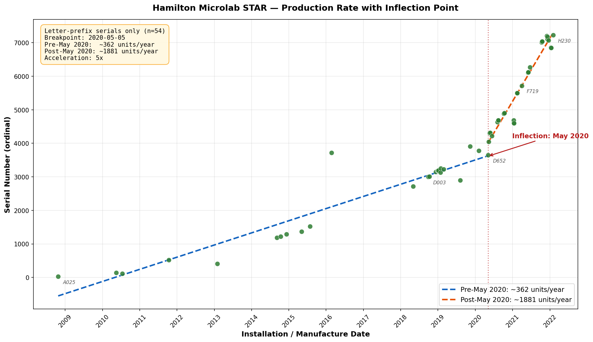
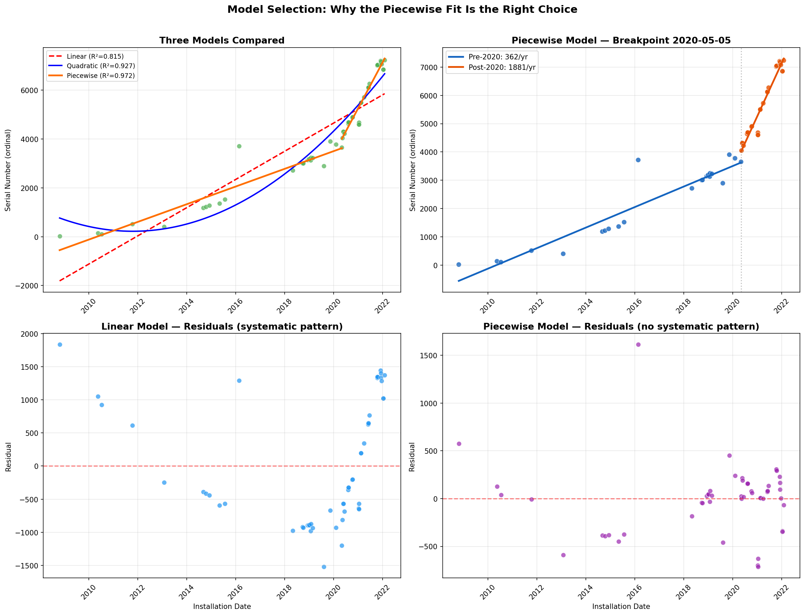

Hamilton Microlab STAR — Production Volume Analysis
Report generated: April 01, 2026
Data source: Hamilton iData instrument PDFs (64 systems analyzed)
Scope: Serial number and installation date analysis to estimate manufacturing volume and production rate
Executive Summary
~7,460
Implied total units manufactured (letter-prefix serial range)
64
Unique systems in sample
18 yrs
Date range covered (2005-05-12 to 2023-04-26)
Data cutoff: The most recent system in our dataset was installed 2023-04-26
(serial 177D). We do not have iData records for systems manufactured after this date.
Production almost certainly continued beyond 2023 — this analysis only reflects what our
collected instrument data can show. Any conclusions about current or recent production rates
should not be drawn from this dataset.
How to determine exact total production: Because Hamilton assigns serial numbers
sequentially, the serial number on the most recently manufactured STAR system is the total
production count. Our highest observed serial is H230 (ordinal 7,230, installed
2023-04-26), meaning at least ~7,230 letter-prefix units had been produced by that date.
To get today's number, find the serial on any recently shipped or installed STAR — convert the
letter to its position (A=0, B=1, ... H=7), multiply by 1,000, and add the three-digit number.
That figure is Hamilton's total Microlab STAR production to date. No modeling required.
Era 1: Pre-May 2020
~362 units/year
Steady, moderate production from 2008 through early 2020.
Serial range: 25–3905 (3,881 implied units over ~12 years)
Systems in sample: 24
Era 2: Post-May 2020
~1881 units/year
Rapid acceleration beginning ~May 2020.
Serial range: 3652–7230 (3,579 implied units over ~1.7 years)
Systems in sample: 30
Production Over Time

Figure 1: Each dot is one observed system. The blue dashed line shows the pre-May 2020 trend (~362/yr);
the orange dashed line shows the post-May 2020 trend (~1881/yr). Vertical red line marks the inflection point.
The scatter plot makes the two production eras visually unmistakable. Before May 2020, serial numbers
advanced slowly — roughly 362 new units per year. After the inflection point, the slope
steepens dramatically to approximately 1881 units per year.
Why a Piecewise Model — Not a Straight Line
An initial linear regression across the full dataset yields R² = 0.815 — meaning
a straight line explains only 81% of the variance in serial numbers over time.
Three candidate models were evaluated:
| Model | R² | AIC | Parameters | Interpretation |
|---|
| Linear |
0.815 |
739.5 |
2 |
Constant production rate (~578/yr) — poor fit |
| Quadratic |
0.927 |
691.3 |
3 |
Gradually accelerating production — better |
| Piecewise Linear |
0.972 |
644.2 |
5 |
Two distinct eras with a breakpoint — best fit |
The piecewise-linear model is the recommended model for three reasons:
- Lowest AIC (Akaike Information Criterion): Despite using more parameters, the
piecewise model's improvement in fit more than compensates for the added complexity. AIC penalizes
extra parameters, so a lower AIC means a genuinely better model, not just overfitting.
- Highest R² (0.972): The piecewise model explains 97% of the
variance in serial number progression — versus 81% for the linear model. That is a
substantial improvement.
- Residual diagnostics: The linear model's residuals show a clear systematic pattern
(see Figure 2, bottom-left) — underpredicting early and late, overpredicting in the middle. This is a
textbook sign of model misspecification. The piecewise model's residuals are randomly scattered
(bottom-right), indicating a proper fit.

Figure 2: Model comparison diagnostics. Top-left: all three models overlaid.
Top-right: piecewise model with color-coded eras. Bottom: residual plots showing the linear model's
systematic error pattern (left) vs. the piecewise model's random residuals (right).
What does the inflection point mean? The data indicates that something changed in Hamilton's
STAR manufacturing around May 2020 — either a capacity expansion, a new production line, increased
market demand, or a combination. The ~5x rate increase is too large to be explained by
normal year-to-year variation. It represents a fundamental shift in production volume.
Serial Number Format Analysis
Four serial number formats were observed:
- Letter + 3 digits (e.g., A142, D777, H230): 54 systems — primary modern format, used for regression analysis
- Pure numeric (e.g., 1413, 5130, 7109): 6 systems — older/parallel numbering scheme
- 3 digits + letter (e.g., 293H, 354H): 4 systems — variant format
- Other (e.g., 177D): 0 system
Note on numeric serials: The 6 pure-numeric serials (1413, 1959, 2082, 2820, 5130, 7109)
do not follow the letter-prefix ordinal scheme and appear to represent a separate or legacy numbering
system. They were excluded from the regression analysis to avoid distortion, though they
are included in the full data table below. The variant formats (293H, 324G, 354H, 177D) were also
excluded from regression for the same reason.
Year-by-Year Breakdown
| Year | Systems in Sample | Era | Serial Numbers |
|---|
| 2005 |
1 |
Pre-inflection |
1413 |
| 2007 |
1 |
Pre-inflection |
2082 |
| 2008 |
2 |
Pre-inflection |
2820, A025 |
| 2010 |
2 |
Pre-inflection |
A110, A142 |
| 2011 |
2 |
Pre-inflection |
5130, A517 |
| 2013 |
1 |
Pre-inflection |
A405 |
| 2014 |
4 |
Pre-inflection |
7109, B190, B222, B286 |
| 2015 |
3 |
Pre-inflection |
1959, B368, B522 |
| 2016 |
1 |
Pre-inflection |
D717 |
| 2018 |
5 |
Pre-inflection |
C716, D003, D012, D148, D182 |
| 2019 |
7 |
Pre-inflection |
C897, D130, D184, D190, D227, D248, D905 |
| 2020 |
11 |
Inflection year |
D652, D777, E049, E222, E309, E313, E637, E683, E687, E889, E903 |
| 2021 |
20 |
Post-inflection |
293H, 324G, 354H, E601, E606, E682, F498, F499, F719, G101, G111, G124, G270, H011, H033, H039, H074, H107, H175, H204 |
| 2022 |
3 |
Post-inflection |
G850, G853, H230 |
| 2023 |
1 |
Post-inflection |
177D |
Complete Data Table
64 systems sorted by installation date. Post-2019 rows highlighted.
| Serial Number | Installation Date | Format | Ordinal |
|---|
| 1413 |
2005-05-12 |
numeric 4digit |
1413 |
| 2082 |
2007-01-08 |
numeric 4digit |
2082 |
| 2820 |
2008-05-14 |
numeric 4digit |
2820 |
| A025 |
2008-10-24 |
letter prefix |
25 |
| A142 |
2010-05-17 |
letter prefix |
142 |
| A110 |
2010-07-15 |
letter prefix |
110 |
| A517 |
2011-10-13 |
letter prefix |
517 |
| 5130 |
2011-12-13 |
numeric 4digit |
5130 |
| A405 |
2013-01-29 |
letter prefix |
405 |
| 7109 |
2014-04-02 |
numeric 4digit |
7109 |
| B190 |
2014-09-05 |
letter prefix |
1190 |
| B222 |
2014-10-14 |
letter prefix |
1222 |
| B286 |
2014-12-08 |
letter prefix |
1286 |
| B368 |
2015-05-06 |
letter prefix |
1368 |
| 1959 |
2015-06-18 |
numeric 4digit |
1959 |
| B522 |
2015-07-27 |
letter prefix |
1522 |
| D717 |
2016-02-22 |
letter prefix |
3717 |
| C716 |
2018-05-03 |
letter prefix |
2716 |
| D003 |
2018-09-28 |
letter prefix |
3003 |
| D012 |
2018-10-08 |
letter prefix |
3012 |
| D148 |
2018-12-11 |
letter prefix |
3148 |
| D182 |
2018-12-28 |
letter prefix |
3182 |
| D184 |
2019-01-02 |
letter prefix |
3184 |
| D190 |
2019-01-04 |
letter prefix |
3190 |
| D130 |
2019-01-24 |
letter prefix |
3130 |
| D248 |
2019-01-29 |
letter prefix |
3248 |
| D227 |
2019-02-25 |
letter prefix |
3227 |
| C897 |
2019-08-07 |
letter prefix |
2897 |
| D905 |
2019-11-12 |
letter prefix |
3905 |
| D777 |
2020-02-05 |
letter prefix |
3777 |
| D652 |
2020-05-05 |
letter prefix |
3652 |
| E049 |
2020-05-12 |
letter prefix |
4049 |
| E309 |
2020-05-21 * |
letter prefix |
4309 |
| E313 |
2020-05-26 |
letter prefix |
4313 |
| E222 |
2020-06-11 |
letter prefix |
4222 |
| E637 |
2020-08-04 |
letter prefix |
4637 |
| E683 |
2020-08-13 |
letter prefix |
4683 |
| E687 |
2020-08-13 |
letter prefix |
4687 |
| E889 |
2020-10-07 |
letter prefix |
4889 |
| E903 |
2020-10-13 |
letter prefix |
4903 |
| E606 |
2021-01-11 |
letter prefix |
4606 |
| E682 |
2021-01-12 |
letter prefix |
4682 |
| E601 |
2021-01-13 |
letter prefix |
4601 |
| 324G |
2021-02-11 |
digit prefix letter suffix |
N/A |
| F498 |
2021-02-16 |
letter prefix |
5498 |
| F499 |
2021-02-16 |
letter prefix |
5499 |
| F719 |
2021-04-01 |
letter prefix |
5719 |
| 293H |
2021-05-27 |
digit prefix letter suffix |
N/A |
| G101 |
2021-06-01 |
letter prefix |
6101 |
| G111 |
2021-06-02 |
letter prefix |
6111 |
| G124 |
2021-06-03 |
letter prefix |
6124 |
| 354H |
2021-06-09 |
digit prefix letter suffix |
N/A |
| G270 |
2021-06-21 |
letter prefix |
6270 |
| H011 |
2021-10-11 |
letter prefix |
7011 |
| H033 |
2021-10-14 |
letter prefix |
7033 |
| H039 |
2021-10-18 |
letter prefix |
7039 |
| H204 |
2021-12-01 |
letter prefix |
7204 |
| H107 |
2021-12-08 |
letter prefix |
7107 |
| H175 |
2021-12-08 |
letter prefix |
7175 |
| H074 |
2021-12-20 |
letter prefix |
7074 |
| G853 |
2022-01-12 |
letter prefix |
6853 |
| G850 |
2022-01-13 |
letter prefix |
6850 |
| H230 |
2022-02-02 |
letter prefix |
7230 |
| 177D |
2023-04-26 |
digit prefix letter suffix |
N/A |
* Date corrected from source PDF (original contained data-entry error)
Data Quality Notes
- E309: Installation date in source PDF reads "2020-21-05" (invalid). Corrected to
2020-05-21 based on download date alignment.
- A234 folder: Folder is labeled "A234" but both PDFs reference serial A025.
Data correctly extracted as A025. The folder name appears to be a mislabel.
- 1941, F679: System folders exist but contain no PDF files. Excluded.
- Multiple PDFs per system: Where Pre/Post service records exist, installation dates
are consistent across all PDFs for the same system.
- "Installation date" as manufacture proxy: This field records the date of initial
system installation. Actual manufacture date may precede this by weeks to months — the
production rate estimates should be understood as approximate.
Limitations
- Sample of 64 systems — not a complete production census. Rate estimates assume
the sample is reasonably representative of the full production population.
- Serial number gaps may exist (skipped numbers, test units, returns).
Implied totals are upper bounds.
- The piecewise breakpoint is optimized from the data, not independently confirmed.
The true inflection may be slightly earlier or later than May 2020.
- Post-2020 rate may overstate sustained production if the sample is biased toward
recent systems (which are more likely to have iData on file).
- Data cutoff at 2023-04-26: Our iData collection does not extend beyond this date.
Hamilton almost certainly continued manufacturing STAR systems after 2023. This
analysis cannot speak to production volumes in 2024–present.